Oscilloscope
An oscilloscope (or “scope”) allows you to view a signal's waveform, typically in a two-dimensional graph where one or more electrical signals (on the vertical axis) are plotted as a function of time or of some other voltage (on the horizontal axis).
Most of the time, oscilloscopes are used to show events that repeat with either no change or events that change slowly.
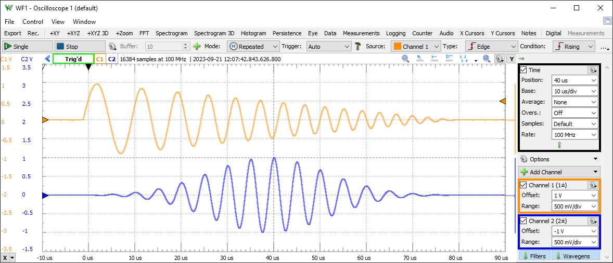
1. Menu
See Menu in Common Interfaces.
1.1. View
2. Control
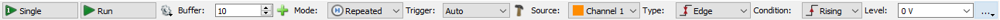
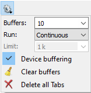 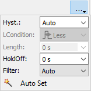
The Control toolbar allows you to stabilize repeating waveforms and capture single-shot waveforms. By default, this only shows the most important options. The down/up arrow in the top right corner shows/hides the other features.
- Single button: starts a single acquisition.
- Run/Stop button: starts a repeated, continuous acquisition, or recording (see Mode). While the acquisition is in progress, the Run button becomes the Stop button.
- 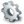
- Buffers: adjusts the number of PC and device buffers for repeated captures.
- Run: selects the Run operation for repeated captures to be Continuous, Stop when the specified Buffers or Limit number of captures are collected.
- Device buffering available with ADP3X50, EclypseZ7. When checked, in Repeated mode the device will store multiple captures at low latency. The number of device buffers is shown in the top of the main time view, DevBuf: used/total. The maximum device buffers is Scope capture memory/ specified Time-Samples/ Enabled device channels.
In this mode the latency between captures with ADP3X50 is less than 1us, between 0.2 and 0.54 us
- Clear buffers deletes captured the PC buffers.
- Delete all Tabs closes all tabs.
- Buffer: The performed acquisitions are stored in the PC buffer in time order. This makes it easy to review a series of repeated acquisitions. The new acquisitions are stored after the currently selected buffer position. If you change the position in the buffer and start a new acquisition, the positions after the selected one will be lost.
- Add Tab: Saves the currently shown acquisition data to a new tab. To close a tab, click the close button at the corner of the tab header. The name of the tab can be edited by double-clicking on the tab header.
- Mode: The mode options select the action of the Run button and are the following:
- Repeated: the Run button starts repeated acquisitions.
- Scan Screen: scan acquisition where the sampled data is drawn from left to right. When the right corner is reached, the signal curve plot continues from the left.
- Scan Shift: similar to the screen mode, but when the signal plot reaches the right corner, the curve plot slides to the left.
- Record: allows capturing large number of samples at lower rates. In this mode, the samples are streamed through the USB, limiting the rate (depending on the system and other connected devices) at about 1M samples/sec.
Selecting the scan modes (Screen and Shift) will change the time base to be at least 1 second span, 100 ms/division. Adjusting the time base to lower than this value will change to Repeated mode.
- Trigger: The three trigger modes are:
- Normal: the acquisition is triggered only on the specified condition. The oscilloscope only sweeps if the input signal reaches the set trigger point.
- Auto: when the trigger condition does not appear in maximum of 2 seconds and capture time, the acquisition is started automatically. In repeated acquisition mode, when the instrument switches to auto trigger, the next acquisitions are made without waiting again to timeout while a trigger event does not occur and the configuration is not changed. When a new trigger event occurs, or the configuration is changed, the current acquisition will be finished and the next one will wait for the trigger again. It is also the best mode to use if you are looking at many signals and do not want to bother setting the trigger each time.
- None: the acquisition is started without a trigger.
- Source: The trigger source selects the oscilloscope channel that is used for the trigger. Other instruments or external trigger signals can be used to trigger the oscilloscope.
- Type: The trigger type selects between edge, pulse, transition, and window.
- Edge: Edge triggering is the basic and most common type. For edge triggering, the trigger level and slope controls provide the basic trigger point definition. The trigger circuit acts as a comparator. You select the slope and voltage level of one side of the comparator. When the trigger signal matches your settings, the oscilloscope generates a trigger.
The slope-condition control determines whether the trigger point is on the rising, on the falling, or either edges of a signal. A rising edge is a positive slope and a falling edge is a negative slope. The level control determines where the trigger point occurs on the edge. The following figure shows you how the trigger slope and level settings determine the waveform display.
| Triggering on rising edge | Triggering on falling edge |
|---|
| 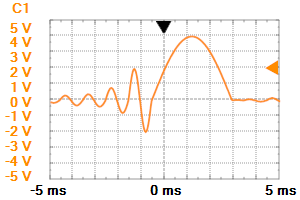 | 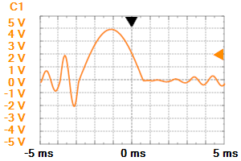 |
-
Pulse: If the trigger type is set to Pulse, then the oscilloscope will trigger if a positive/negative pulse has a larger/smaller length than the one already set by the user. For example, if the pulse is smaller than the length set, and the triggering condition is set to more, the oscilloscope will not trigger.
The picture below shows a positive pulse trigger configured for less than 200 µs.
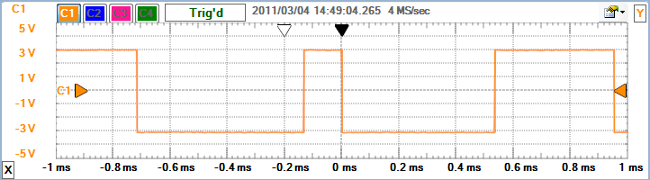
The picture below shows a positive pulse trigger configured for time-out at 200 µs.
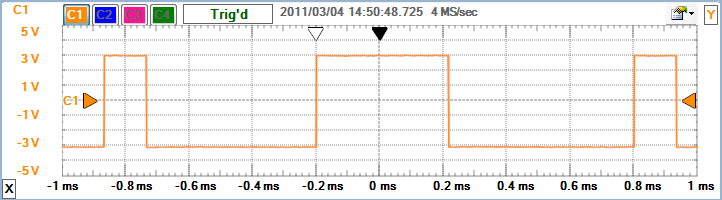
The picture below shows a positive pulse trigger configured for more than 200 µs.
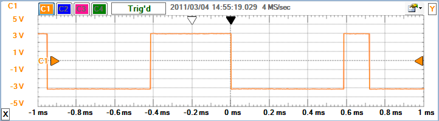
- Transition: The transition trigger is similar to the pulse trigger, but here the transition time of a signal is compared with the specified length. The low and high transition levels are specified by the hysteresis window.
The picture below shows a rising transitions trigger from -3V to +3V configured for less than 200 µs.
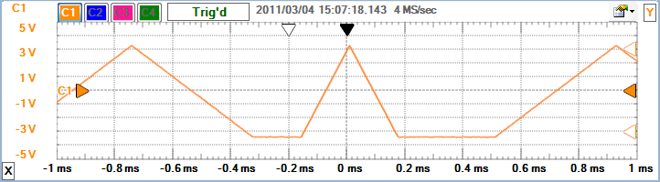
The picture below shows a rising transitions trigger from -3V to +3V configured for time-out at 200 µs.
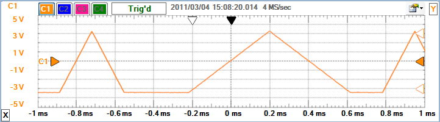
The picture below shows a rising transitions trigger from -3V to +3V configured for more than 200 µs.
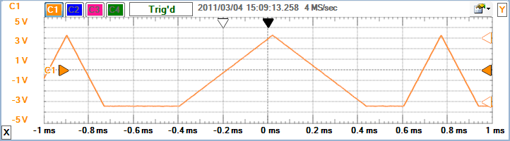
- Window: It triggers on entering or exiting the low or high levels specified by the level and plus-minus the hysteresis. The Length option can be used for glitch filtering.
The picture below shows an exiting window trigger at ±0.5V
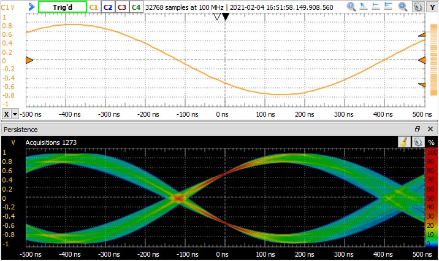
- Condition: The trigger condition for Edge type and internal or external sources selects between rising, falling, or either edge. For Transition type selects between rising or falling. For Pulse trigger, it selects between positive or negative pulse.
For internal triggers (Wavegen, Patterns...), the rising edge is the start and falling end of the generation.
- Level: The trigger level is the adjustable voltage level at which the scope triggers when the trigger input crosses this value. See Hysteresis and Type.
-
Hyst.: Using hysteresis, low and high levels are determined (the trigger level plus and minus the hysteresis value). When the signal level exceeds the high level, it is considered as high and will stay high until falling below the low level. This is used to avoid bouncing caused by signal noise and also to specify the transition trigger conditions. The Auto option uses 1% of the specified trigger channel range value.
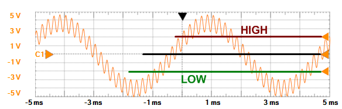
The picture below shows how, without hysteresis, the trigger event also occurs on the falling edge of the input signal due to signal noise.
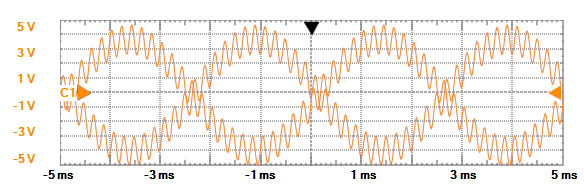
- Length Condition: The trigger length condition selects between less, time out, or more for pulse length or transition time. See Pulse and Transition trigger.
- Trigger Length: The trigger length specifies the minimal or maximal pulse length or transition time. See Pulse and Transition trigger.
- Holdoff: The trigger holdoff is an adjustable period of time during which the oscilloscope will not trigger. This feature is useful when you are triggering on complex waveform shapes, so the oscilloscope triggers only on the first eligible trigger point.
The following figure shows how the trigger holdoff helps to create a usable display.
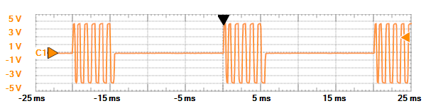
Trigger with 10ms holdoff
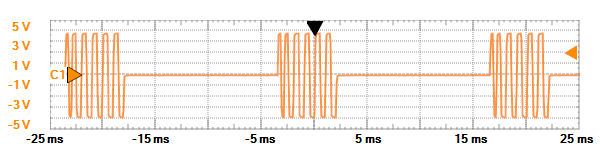
Trigger without holdoff
The holdoff length should be around the maximum burst length, preferably a little bit more, but not less than this. For the above situation, the holdoff value should be around 6ms, but lengths between 6 and 15 ms are also acceptable.
- Filter: The trigger sample selects the sample mode that will be used by the trigger detector. This can be different from the one used for acquisition, which is why the trigger event might not be visible on the acquired data. The Auto option uses a filter based on the selected trigger source channel Sample Mode.
- Auto Set button: performs automatic adjustment of the enabled real and math channels, and trigger configuration according to the input signals. The offset and range of the real channels is determined by the minimum and maximum input levels of one second time span. The trigger is set to rising edge of the channel with the lowest frequency and higher amplitude input signal.
The Record to File can be opened under Control menu or Rec. toolbar button. This lets you capture samples directly to file in Binary, NI TDMS, WAV or text file.
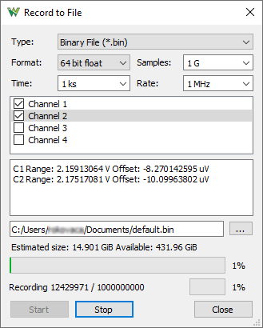
3. Channels
This toolbar contains the time and channel configuration groups. The toggle button in the top-left corner enables/disables the auto hiding of this toolbar.
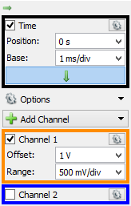
The Add Channel button opens a drop-down with the following options:
The check-box before the group name enables or disables the respective channel. The drop-down properties button in the top-right corner allows you to configure the channel properties. The math and reference channels also have a close button.
3.1. Time Group
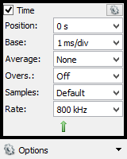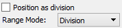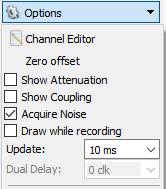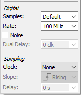
Use the time group to position and scale the waveform horizontally using the time base and the horizontal trigger position controls.
- Position: The horizontal position control moves the waveform left or right to exactly where you want it on the screen. It actually represents the horizontal position of the trigger in the waveform recording. Varying the horizontal trigger position allows you to capture what a signal did before a trigger event (so-called
“pre-trigger viewing”).
Digital oscilloscopes can provide pre-trigger viewing because they constantly process the input signal, whether a trigger has been received or not. Pre-trigger viewing is a valuable troubleshooting aid. For example, if a problem occurs intermittently you can trigger on the problem, record the events that led up to it, and possibly find the cause.
- Base: The time base setting (seconds/division) from the channel configuration toolbar lets you select the rate at which the waveform is drawn across the screen. This setting is a scale factor. For example, if the setting is 1 ms, each horizontal division represents 1 ms and the total screen width represents 10 ms (ten divisions). Changing the sec/div setting allows you to visualize longer or shorter time intervals of the input signal.
- Average: specifies the number of acquisitions to average.
- Overs.: specifies the oversampling ratio.
Average and Oversampling require repetitive signal and stable trigger with Single or Repeated acquisition. The individual captures are aligned and combined based on peak frequency phase of trigger source channel or Channel 1 when other trigger source is used, or trigger crossing of source channel when no peak or too low frequency is detected. For peak frequency alignment Acquisition # X/X @ MHz is displayed and for trigger crossing alignment Acquisition # X/X.
The oversampling requires external waveform source since the ones produced by the device Wavegen or Patterns are synchronous with the Scope.
The ADP3450 and ADP3250 can shift the Scope captures at 4 phases, so it can oversample at least by 4 the signals generated by the same device, resulting in a 0.5 GS/s sample rate with 125 MS/s device frequency adjustable under Settings/ Options/ Device.
The Average value 1 interpolates the samples with respect to trigger point.
The Oversample value 1 enables Scope capture shifting for ADP3X50.
- Samples: adjust the number of samples to acquire.
- Rate: adjusts the sample rate. It can be natural divisions of the 100MHz system/ADC frequency, like 50MHz, 33MHz, 25MHz...1Hz, 1mHz
In the property drop-down, the following can be configured:
- Position as division: selects the unit of the position parameter, division, or seconds.
- Range Mode: selects the display mode for time base (per division, plus-minus, and full).
In the Options drop-down, the following can be configured:
- Channel Editor: opens a configuration window for the real channels
- Zero offset: applies the average level of the last acquisition as zero level compensation for the selected channels, use for quick offset calibration
- Show Attenuation: check to display the Attenuation option for the channels.
- Show Coupling: check to display the Coupling option for the channels.
- Acquire Noise: check to acquire scope noise samples, uncheck to speed up acquisition rate.
- Draw while recording: check to draw the waveforms while recording. A high sample rate might cause sample loss.
- Update: this specifies the time period at which the application will check the oscilloscope device status and read the acquired data in repeated Acquisition Mode. Increase the time to reduce the update rate.
Digital:
- Samples: adjust the number of samples to acquire for digital channels.
- Rate: adjusts the sample rate for digital channels.
- Acquire Noise: select to acquire digital noise samples in half of the digital buffer.
Sampling:
The sampling lets you synchronize the acquired samples with an external trigger source. The specified sample Rate will be used as reference for the measurement.
- Clock: select the trigger signal to be used as sampling clock. In this mode the specified Rate is only used for representation.
- Slope: select the clock slope for sampling.
- Delay: adjust the delay between clock event and sampling.
3.2. Real Channels
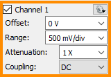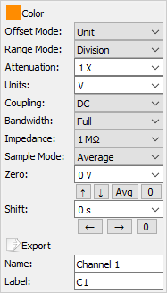
Use the real channel (vertical controls) to position and scale the waveforms vertically using the offset and range controls for each channel.
- Offset: The offset (vertical position) control lets you move the waveform up or down to exactly where you want it on the screen. The offset is the voltage difference between the center line of the oscilloscope screen and the actual ground. This difference is generated by an internal offset voltage source.
- Range: The range (volts/division) controls determine the vertical scale of the graph drawn on the oscilloscope screen. The volts/div setting is a scale factor. For example, if the volts/div setting is 2 volts, then each of the ten vertical divisions represents 2 volts and the entire screen can show 20 volts from bottom to top. If the setting is 0.5 volts/div, the screen can display 5 volts from bottom to top, and so on. The maximum voltage you can display on the screen is the volts/div setting multiplied by the number of vertical divisions.
In the property drop-down, the following can be configured:
- Color: sets the channel waveform color.
- Offset as division: selects the unit of the offset parameter, division, or voltage.
- Noise: shows or hides the noise band (min/max values).
- Range mode: selects the display mode for the range of the channels (per division, plus-minus, and full).
- Attenuation: specifies the used probe attenuation. The probe at 10X needs to be tuned! It can be used specify external amplification like for 50* amplification use 0.02X Use negative value to invert the signal.
- Units: lets you specify the channel units.
- Coupling: lets you select the input coupling between AC and DC. Available with ADP3X50 and ADP5XX0. This option does not change the input coupling of EExplorer and Analog Discovery BNC adapter boards. These have separate input and jumper for such coupling options.
- Bandwidth: lets you select the bandwidth filter. Available with ADP3X50 and ADP5XX0.
- Impedance: lets you select the input impedance. Available with ADP5XX0.
- Sample Mode: sets the acquisition sample mode. The oscilloscope AD converter works at a fixed frequency. Depending on the time base setting and the size of the oscilloscope buffer, the sampling frequency can be less than the AD conversion frequency. For instance, if the AD conversion frequency is 100 MHz (10 ns), the buffer size is 8000 samples and the time base is 200 µs/division, then between two samples there will be 25 AD conversions. The following filters can be applied to the extra conversions:
- Decimate: will record only the Nth AD conversion.
- Average: each sample will be calculated as the average of the AD conversions.
- Min/Max: each two samples will be calculated as the minimum and maximum value of the conversion results.
- Full Scale: similar to average but the stored samples match the specified range instead of the device input range options. This can improve the vertical resolution of the samples.
- Zero: lets you fine adjust the zero level, for quick offset calibration.
- Shift: lets you shift the channel horizontal position.
- Export: Opens export window with the respective channel data. See Export in Common Interfaces.
- Name: specifies the channel name.
- Label: specifies the channel label.
Input Coupling
Coupling is the method used to connect an electrical signal from one circuit to another. In this case, the input coupling is the connection from your test circuit to the oscilloscope.
On the Electronics Explorer board, the input coupling AC and DC are separate input connectors on the board with AC
and DC marks. On the Analog Discovery BNC Adapter jumper, select
between AC and DC coupling. DC coupling shows all of an input signal. AC coupling blocks the DC component of a signal so that you see the waveform centered at zero volts.
The following diagram illustrates this difference. The AC coupling setting is handy when the entire signal (alternating plus continuous components) is too large for the volts/div setting.
|
DC coupling
|
AC coupling
|
|
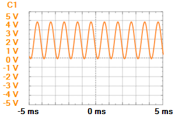
|
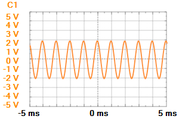
|
2V peak-to-peak sine wave with 2V DC component
3.3. Filter Channels
The Filter channels can be configured in the oscilloscope interface, after collapsing these in the channels column.
The ADP3X50, EclypseZ7, Analog Discovery 3 and newer devices support in-device filter channels. See the device description for more detail.
The sampling on various channels can be enabled by checking the respective channel.

For each real channel there is a Filter channels. The input of these can be selected to be the raw ADC data. In this case the filter is running at the specified system frequency. For the Decimate and Average options the filter rate will be the Scope rate, a downscaled system frequency common for all the Scope channels.
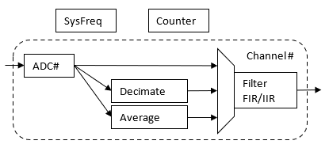
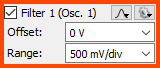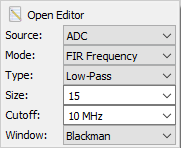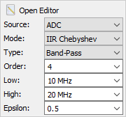
In the filter property drop-down, the following can be configured:
- Source: select from ADC, Decimate and Average.
- Mode: select from: FIR Window, FIR Frequency, IIR Butterworth and IIR Chebyshev.
- Size: specify the FIR taps.
- Window: select the FIR window shape or enter custom coefficients, see Spectrum Window
- Beta: for FIR Kaiser window.
- Custom opens the custom FIR window editor.
- Type: select from low/high pass and band pass/stop.
- Order: specify filter order.
- Cutoff,Low,High: specify corner frequencies. The IIR filter has frequency limitations. In case the filter saturates use Decimate or Average source and adjust the Scope sampling frequency.
- Epsilon: for IIR Chebyshev.
The Filter editor lets you adjust the parameters and preview the transfer characteristics of the filter.
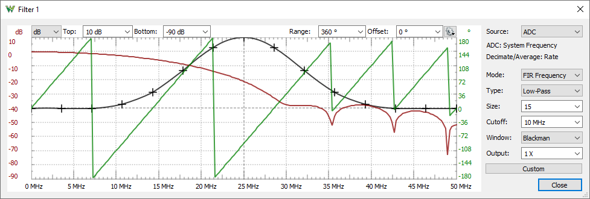
3.4. Wavegen Channels
The Wavegen channels can be controlled from the oscilloscope interface, after collapsing these in the channels column.
The channel sampling can be enable only on the devices which support it.
The ADP3X50, EclypseZ7, Analog Discovery 3 and newer devices support digital loopback of the Wavegen channels. See the device description for more detail.
The captured output samples are the digital samples which are sent to the DAC. This is not an analog loopback to monitor the actual output! For such purpose use an Oscilloscope input channel.
With ADP3X50 and EclypseZ7 the two Wavegen channel outputs, Amplitude and Frequency can be captured.
With Analog Discovery 3 the two Wavegen channel outputs and the output or readback of the two Power Supply channels can be captured. This can be selected under the channel's option Sample Mode.
For every device the Wavegen channels can be controlled from property dropdown similar to Wavegen Simple configuration mode. The channels are started in synchronized mode.
When a Wavegen channel is controlled from Scope it takes control over this device resource and the respective channel will show busy in the Wavegen instrument.
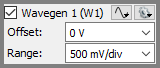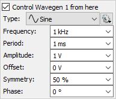
3.5 Reference Channels
The reference channels can be added using the “Add Channel” button from the Channel toolbar.
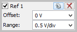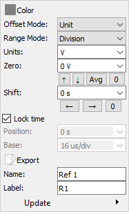
In the property drop-down, the following can be configured:
- Lock time: when checked, the time configuration of the reference channel follows the main configuration. When unchecked, the custom time setting is used for this channel.
- Position: lets you adjust the position of the reference waveform.
- Base: lets you adjust the scale factor of the reference waveform.
- Update: updates the reference channel with the selected channel waveform or imported data from file.
- See Real channels for the other options.
3.6. Math Channels
The integrated mathematical functions allow you to perform a variety of mathematical calculations on the input signals of the oscilloscope. Simple, Custom, Filter and LockIn math channels can be added with the “Add Channel” button from the Channels.
3.6.1 Simple Math Channel
The simple math channel can be configured to perform the following operations. The mathematical operations are performed by the PC, so the oscilloscope device cannot trigger on these channels.
- + addition, A + B
- - subtraction, A - B
- X multiply, A * B
- / division, A / B
- RMS RMS, sqrt( A^2 + B^2)
- ATan arctangent, atan2(y=A, x=B)
- AC removes the DC component of channel A, A - DC
- offset subtracts the specified value from channel A. For this purpose the Zero offset option can also be used for any channel.
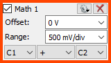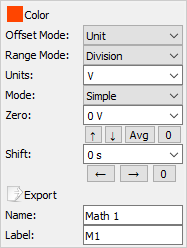
In the property drop-down, the following can be configured:
- Mode: math channel mode between simple, custom, and filter.
- See Real channels for the other options.
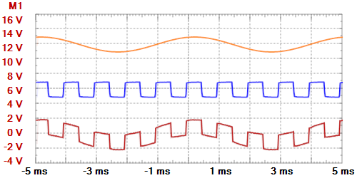
3.6.2 Custom Math Channel
The custom or simple math channel can be selected under the channel properties, as shown below.
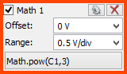
The Custom Math Function editor can be launched with the bottommost button showing the formula.
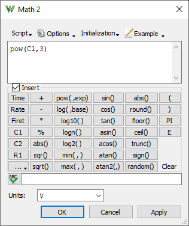
You can type the custom function in the text box. It accepts single line or complex multiline functions where return statements should be used. The entered function can be verified with the Evaluate button and the resulting number for one sample is displayed, otherwise the error description is listed.
Click Apply to apply changes. Click OK to save the last valid function. Click Cancel to use the function saved before the editor was opened.
See Script in Common interfaces. The local variables are real, while the reference and math channels will have a smaller index, such as: C1, C2, R1, M1. In the M1 function, no other math channel can be used. In M2, the M1 can be used, while in M3, the M1 and M2 can be used.
Example functions:
- M1:
(C1-C2)/0.01
- Consider that C1 and C2 are connected to a 10 mΩ shunt resistor. M1 will show the passing current.
- M2:
M1*C2
- M2 will show the power taken by the circuit under test.
- M3:
const VFullScale = 3.3;
if(Time < 0)
return floor(Time*1000+16)*VFullScale/16
else if(Time < 0.016)
return floor(Time*1000)*VFullScale/16
else
return floor(Time*1000-16)*VFullScale/16
3.6.3 Filter Math Channel
The Math Filter channels can be added using the “Add Channel” button from the Channel toolbar.
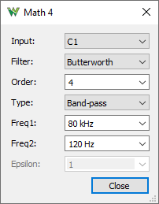
The filter channels have the following options:
- Source: lets you select the source channel to filter any real or reference channel.
- Filter button opens a dialog to configure the filter
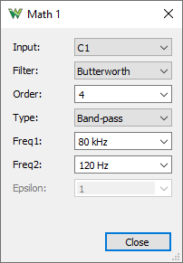
- Filter: lets you select the filtering algorithm between Butterworth, Chebyshev I, or Custom window coefficient.
- Order: lets you adjust the filter order.
- Type: lets you select the filter mode between low-pass, high-pass, band-pass, or band-stop.
- Freq: lets you select the filter cutoff, or upper and lower half power frequencies.
- Epsilon: lets you adjust the Epsilon parameter of the Chebyshev filter.
In Custom mode, the filter window coefficients can be specified with up to 100 values. The output is normalized according the calculated window volume.
3.6.4 LockIn Math Channel
The LockIn amplifier can be used to extract signal based on a know frequency or reference carrier waveform, demodulate or extract from noise. LockIn channels can be added using the “Add Channel” button from the Channel toolbar.
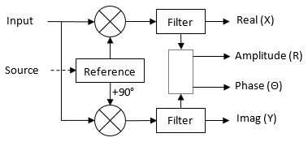
Based on the selected reference source or specified frequency and phase a sine signal is synthesized. This is mixed with input in-phase and quadrature, then the selected filter applied.
For additional outputs of the process LockIn Ouput channels can be added.
The LockIn channels have the following options:
- Input: lets select the input channel.
- Reference: lets select the reference signal mode.
- Internal: lets you specified frequency and phase for reference signal.
- Source Phase: lets you specify frequency and identify phase based on source input
- Source: uses source input to identify frequecy and phase
- Filter: configure low or band-pass filter
- Gain: lets you select the amplification of the outputs: R, X, Y
- Output: lets you select the output of this math channel:
- Amplitude (R) the RMS value
- Phase (Θ) the phase ATan2(Y,X) value
- Real (X,I) in-phase, 0*, cosine value
- Imag (Y,Q) in-quadrature, 90*, sine value
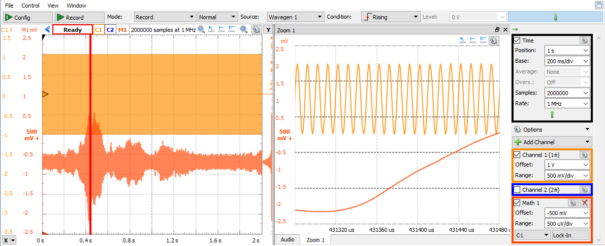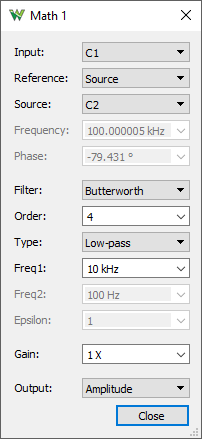
4. Main Plot
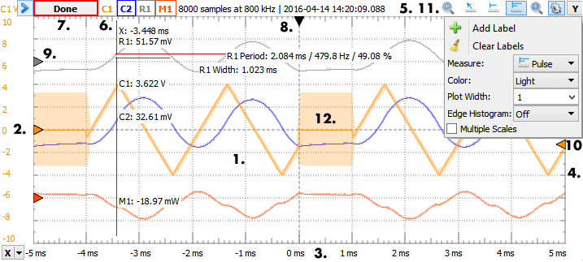
- The center of the display is marked with grid lines. Each vertical and horizontal line constitutes a major division. These are laid out in a 10-by-10 division pattern. The tick marks on the sides between major divisions are called minor divisions. The labeling on the oscilloscope controls (volts/div and sec/div) always refer to major divisions.
- On the left side of the view, the horizontal voltage grid line marks are shown for the active channel. Left-mouse button dragging changes the offset, wheel adjusts the range, and right button dragging adjusts the offset and the range of the active channel.
- The time marks of the vertical grid lines are located at the bottom. Left-mouse dragging changes the time (trigger horizontal) position and right-dragging adjusts the time base.
- On the right side of the view, left-mouse dragging changes the vertical trigger level and right-dragging adjusts the hysteresis level.
- On the top side, information about the viewed acquisition is displayed: number of samples, rate, and capture time.
- The channel list colors make channel identification easy. Left-mouse clicking the rectangle activates the channel. A right-mouse click disables/hides it.
- The status label shows the state of the oscilloscope. See Acquisition States for more information.
- The horizontal trigger position arrow can be dragged with the mouse and double-clicking resets the position to zero.
- The zero point arrows for each channel can be dragged with the mouse to change the vertical position (offset).
- The vertical trigger position arrow can be dragged with the mouse to change the trigger level. The two smaller arrows represent the low and high levels (hysteresis).
- See Plots in Common Interfaces.
- Noise band, which indicates a glitch or components that have a frequency higher than the sampling frequency. See Acquire Noise and Real channelsoptions.
The Ctrl+1,2,3... shortcuts activate a channel, then the arrow keys can be used to adjust the range and offset. The Shift key slows down and Ctrl key speeds up the adjustment.
4.1. Thumbnail
The Thumbnail shows the entire acquisition data highlighting the currently analyzed part.
When stopping the instruments, the mouse-click positions and mouse-scroll resizes the visualized waveform. By clicking on the button in the top left edge, or mouse double-clicking, it will reset the time settings to show the entire acquisition.
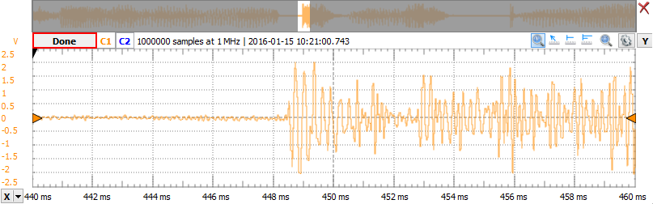
4.2. Quick Measure
See Quick Measure in Common Interfaces.
The Quick Measure can be used in the following tree modes:
- Free: Allows measuring the distance between two mouse clicks, expressed in time and frequency. Also shows the vertical value and difference of the clicked positions.
- Vertical: It is similar to Free mode but the cursor sticks to signal transitions. The vertical measurement is performed on signal values for each channel.
- Pulse: When the mouse cursor position is in the signal view, it will place a vertical cursor along with two more horizontal ones towards the right, measuring the pulse-width, the period, the frequency, and the duty cycle. Otherwise, it will place a single vertical cursor showing the time position and the waveform's level at the intersections with the vertical cursor.
- The following automotive overlays are available: Cylinders, Cycles, 100%, 720° and 360°
The Stroke setting adjust the RPM displayed for Cylinders and Cycles, with 2 1/dt and with 4 2/dt.

4.3. Cursors
The X and Y cursors are available for main time view. See Cursors.
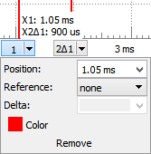
The X cursor's drop-down menu contains adjustment controls for the position, reference cursor, delta x value, and remove button.
The Y cursor's drop-down menu contains adjustment controls for the channel, position, reference cursor, delta value, and remove button.
4.4. Digital Channels
The Logic Analyzer can be enabled inside the Oscilloscope interface by adding digital channels, or by enabling from the view menu.
The picture below shows the digital input and analog output of a resistor network.
Having the Scope to Digital option enabled the analog channels are digitized with the specified threshold and hysteresis.
5. Views
5.1. Zoom
The Zoom views are useful in analyzing a portion of the main view and comparing these segments.
The selected area is marked in the main time plot by a rectangle while the mouse cursor is above the zoom window.
5.2. XY
The XY view allows you to plot one channel against another. This plot could be the I-V curve of a component such as a capacitor, inductor, a diode, or a Lissajous figure showing the phase difference between two periodic waveforms. XY view is also capable of more advanced operations, such as plotting a math channel against a reference waveform.
The channels for X and Y representation can be selected on the top side. Multiple XY pairs can be activated or multiple XY views added. The More dropdown contains the following options:
- Persistence: enables persistence for repeated captures
- Fade: adjusts the fade out speed
- Width: adjusts the width of the XY bitmap in pixels, the Auto option uses the current view width
- Height: adjusts the height of the XY bitmap in pixels, the Auto option uses the current view height or width if this is fixed
Note the drawn XY bitmap is scaled to the available view area even if fixed width and height is specified but keeping the aspect ratio.
- Composition: selects the overlay when multiple XY are used in the sample view.
5.3. XYZ
The XYZ view allows you to plot XY with Z as color or strength.
The channels for X, Y and up to four Z axis can be selected on the top side. The More dropdown contains the following options:
- Persistence: enables persistence for repeated captures
- Fade: adjusts the fade out speed
- ZColor: selects color for Z magnitude between top-bottom (offset±amplitude) between: Hue, HueTransparancy and Transparency (Z channel color)
- Width: adjusts the width of the XY bitmap in pixels, the Auto option uses the current view width
- Height: adjusts the height of the XY bitmap in pixels, the Auto option uses the current view height or width if this is fixed
Note the drawn XY bitmap is scaled to the available view area even if fixed width and height is specified but keeping the aspect ratio.
- Composition: selects the overlay when multiple Z channels are used in the sample view.
5.4. XYZ 3D
The XYZ view allows you to plot 3D scatter graph. It is supported under 64 bit Windows and MacOS builds.
The channels for X, Y and Z axis can be selected on the top side and contains the following options:
- Camera: lets you select view position presets.
Holding the right mouse button on the graph and moving the mouse will rotate the view.
The dropdown menu contains options:
- Color: opens a dialog to select color for samples
- Theme: select background, grid, label color
- Shadow: Select the shadow quality or disable it.
- Dots: sample point representation
- Limit: maximum number of sample points
- Grid: check to display the grid
- Background: check to display the background for shadow projection
- Pan/Tilt/Zoom: adjusts the view perspective
5.5. FFT
The FFT view plots amplitude versus frequency. In other words, it shows signals in the frequency domain, as opposed to the time view, which shows signals in the time domain as amplitude versus time. It is especially useful for tracking down the cause of noise or distortion in measured signals.
This view contains a subset of Spectrum Analyzer instrument features. To have more options, use this instrument.
The FFT toolbar only shows the most important options by default. The down/up arrow in the top-right corner shows/hides the other features. This toolbar contains the following:
- Center/Span or Start/Stop: These options adjust the shown frequency range.
- Top: Adjusts the plot top magnitude level.
- Bottom: Adjusts the plot bottom magnitude level.
- Units and Reference: See Spectrum Magnitude options.
- Type and Count/Weight: See Spectrum Traces options.
- Window and Beta: See Spectrum Traces options.
- Freq. Scale: Selects between Linear and Logarithmic frequency scale.
- Mag. Scale: Selects between Linear and Logarithmic magnitude scale, available for voltage units.
- Phase: Selects between Off, Degree or Radian. The phase is displayed at cursor values and in FFT export.
5.6. Spectrogram
The Spectrogram is a visual representation of the spectrum of frequencies in a sound or other signal as they vary with time. The horizontal axis represents time, the vertical axis is frequency; a third dimension indicating the amplitude of a particular frequency at a particular time is represented by the intensity or color of each point in the image.
The Spectrogram view toolbar only shows the most important options by default. The down/up arrow in the top-right corner shows/hides the other features. This toolbar contains the following:
- Source: Selects the channel for this view.
- Window: Selects the time domain window filter function. See Spectrum Window options.
- Resolution: Selects the frequency resolution. Increasing this enlarges the sliding time window which reduces the horizontal resolution.
- Frequency: Selects to show the full, half, or quarter frequency range. The maximum frequency is half of the acquisition sample rate.
- Units/Reference: Selects the amplitude units. The voltage units result in linear, and dB units result in logarithmic magnitude representation. See Spectrum Magnitude options.
- Top/Bottom: These options adjust the amplitude mapping to color scale.
5.7. Spectrogram 3D
In Spectrogram 3D lets you draw 3D surface spectrogram. The X axis represents time, the Y axis is frequency and Z axis the amplitude.
The toolbar contains the following:
- Source: Selects the channel for this view.
- Window: Selects the time domain window filter function. See Spectrum Window options.
- Resolution: Selects the frequency resolution. Increasing this enlarges the sliding time window which reduces the horizontal resolution.
- Steps: Selects the analysis steps, the X axis points.
- Proportion: Selects the 3d plot X/Y time/frequency proportion.
- Units/Reference: Selects the amplitude units. The voltage units result in linear, and dB units result in logarithmic magnitude representation. See Spectrum Magnitude options.
- Top/Bottom: These options adjust the Z/amplitude range and mapping to color scale.
- Start/Stop: These options adjust the Y/frequency range.
- Camera: Selects one of the 3D view perspective presets.
Holding the right mouse button on the graph and moving the mouse will rotate the view.
- Color: Selects the Z/amplitude color option.
The dropdown menu contains options:
- Shadow: Select the shadow quality or disable it.
- Theme: Select the background, grid and label color.
- Grid: check to display the grid
- Background: Check to display the background for shadow projection.
- Flat: Check to draw flat or uncheck for curved surface.
- Pan/Tilt/Zoom: Adjusts the view perspective.
5.8. Histogram
A histogram is a graphical representation of the voltage distribution in a signal waveform. It plots the distribution of values for each voltage value, with the number of times the signal has a certain voltage value represented as a percentage.
The picture below shows the histogram view of a sine and another signal.
The Auto scale option adjusts the scale for each channel separately based on the maximum value. With manual scale, a common Top level can be specified.
5.9. Persistence
Persistence view superimposes multiple waveform acquisitions on the same view. The more frequent waveforms are drawn with hotter colors than rare ones. The view is cleared by the clear button, after making any configuration change, or restarting repeated acquisition.
This view is useful to detect glitches, or to catch a rare event in a series of repeated normal events. The areas of the view that have the highest density are red (hot), while the areas with the lowest density are blue (cold). The persistence is infinite.
Top: setting adjusts how plotted data points are colored. If a data point occurs infrequently enough to fall within the color range band (below the top setting), then it is colored according to how often it has been recorded as occurring. If the data point falls outside the band, meaning it occurs frequently and consistently, then it is colored with whatever the identifying color of its scope input channel is (orange for ch1, blue for ch2, etc).
Middle: setting adjusts the distribution of the range of colors used in the plot, so that a user might more easily distinguish the parts of the signal they are interested in. For example, raising the Middle setting narrows the range of occurrences that are colored red, so that a user might better be able to narrow in on and differentiate between frequently-occurring points in the signal.
5.10. Eye Pattern
Eye Pattern view superimposes multiple samples of signal periods from one or multiple captures. The more frequent waveforms are drawn with hotter colors than rare ones.
It is recommended to be used with high number of Samples which is adjustable in the Time group or select Record mode if the device supports it, like ADP3X50 with DDRam recording. When used with repetitive captures the phase information information between the capture is unknown and information about low frequency jitter is lost.
If the device supports frequency adjustment (like ADP3X50) it is good to set this to an unrelated to the analyzed rate. This to improve the frequency and phase detection method by having varying phase between the signal and sampling. If supported, the device frequency can be adjusted under Settings/ Options/ Device.
By default the left axis shows the vertical and the bottom the crossing point histogram.
When quick measure is activated the histograms at cursor position or selected area is shown.
- Data: selects the data signal.
- Clock: selects the optional clock signal.
- Mode: selects the relation between clock and data: double data rate, rising or falling edge sampling.
- Clock: specifies the data bit rate or Auto for measured frequency.
- Measure average and lock: when pressed it will start capturing, measure the average rate and threshold(s), and set these as fixed values.
- Lock: check to set fixed rate and threshold, uncheck to set these to automatic.
- Clear: will clear the view and measurements.
- Reset: will clear the view and average rate and threshold(s).
- Show measurements: check to display measurements.
- Width: specifies the measurement width in pixels.
- Height: specifies the measurement height in pixels or Auto sets it based on channel resolution and specified width.
- Range: specifies eye width in time or Auto sets is based on Rate.
- Shift: specifies the phase shift which may be useful when clock is used.
- ClockThr: specifies clock signal threshold; or Auto will use average value.
- High: specifies logic high level in percentage used in rise and fall time measurement.
- Low: specifies logic low level in percentage used in rise and fall time measurement.
- ClockThr: specifies clock signal threshold; or Auto will use average value.
- Timeout: specifies the timeout for "Measure average and lock"
- Average Threshold: check to average auto threshold(s) when running; otherwise threshold(s) are measured individually for each capture.
- Average Rate: check to average auto rate when running; otherwise rate is measured individually for each capture.
- Top: setting adjusts how plotted data points are colored. If a data point occurs infrequently enough to fall within the color range band (below the top setting), then it is colored according to how often it has been recorded as occurring. If the data point falls outside the band, meaning it occurs frequently and consistently, then it is colored with whatever the identifying color of its scope input channel is (orange for ch1, blue for ch2, etc).
- Middle: setting adjusts the distribution of the range of colors used in the plot, so that a user might more easily distinguish the parts of the signal they are interested in. For example, raising the Middle setting narrows the range of occurrences that are colored red, so that a user might better be able to narrow in on and differentiate between frequently-occurring points in the signal.
- Quick Measure: check to enable or double-click on the drawing area.
- further drawing options and labels
5.11. Data
The Data view displays the acquisition samples and the time stamps.
The column header shows the sample index, the first column shows the time stamp, followed by the values for channels.
The selected cells can be copied and pasted to other applications.
5.12. Measurements
The Measurements view shows the list of the selected measurements.
The first column in the list shows the channel, the second shows the type, and the third shows the measurement result. See the mouse operations found in the Lists section.
Pressing the Add Default Measurement button opens the Add Measurement window. On the left side is the channel list, and on the right side is a tree view containing the measurement types in groups. Pressing the Add button here (or double-clicking an item) adds it to the measurement list.
The Show menu options allows you to create statistics out of measurements between acquisitions, which can be cleared with the Reset button.
Vertical-axis measurements for each channel:
- Maximum: the absolute largest value.
- Minimum: the absolute smallest value.
- Average: the mean value between maximum and minimum values.
- Peak2Peak: the difference between the extreme maximum and minimum values.
- High: pulse top settled value according to the histogram.
- Low: pulse bottom settled value according to the histogram.
- Middle: the middle value of the pulse between top (High) and bottom (Low) settled values.
- Amplitude: half of the difference between the pulse top (High) and bottom (Low) settled value.
- DC RMS: direct current root mean square represents the RMS applied to the entire signal, including AC and DC components.
- AC RMS: alternating current root mean square is used to characterize AC signals by subtracting out the DC, leaving only the AC signal components.
- Overshoot: = (Peak to Peak / 2 - Amplitude) / Amplitude.
- Rise Overshoot: = (Maximum - High) / Amplitude.
- Fall Overshoot: = (Minimum - Low) / Amplitude.
Horizontal-axis measurements for each channel:
- Cycles: number of full cycles in visible acquisition data.
- Frequency: frequency of the signal.
- Period: period of the signal.
- PosDuty: positive duty of the signal.
- NegDuty: negative duty of the signal.
- PosWidth: positive pulse-width of the signal.
- NegWidth: negative pulse-width of the signal.
- RiseTime: rise time of the signal from 10% to 90% between low and high levels.
- FallTime: fall time of the signal from 90% to 10% between high and low levels.
The Add/Custom Channel measurement opens a script editor with an average calculation example script. A custom measurement involving one Channel's data can be created here. This will be added to the Defined Measurement Custom category list to be used for other channels.
T1 and T2 are time positions relative to T0. The value of these: for Capture extent represent the first and last sample of the capture, for Visible the currently visible time span, and for Cursor the selected X cursors positions. The Channel.getData(T1,T2) returns the samples for the time span, Channel.measure("name", T1, T2) the measurement performed between T1 and T2.
See the predefined vertical measurements that can be opened with Edit as read-only examples.
See Script in Common interfaces. In the Locals menu, you can find Time and Channel, which are two script specific objects.
Average calculation:
// initialize a local variable
var value = 0
var data = Channel.getData(T1,T2)
// loop to access each sample
data.forEach(function(sample){
// make sum of samples
value+=sample
})
// divide the sum with the number of samples to get the average
value /= data.length
// last line of code is the measurement value
Accessing other measurements, calculating peak-to-peak value:
Channel.measure("Maximum",T1,T2) - Channel.measure("Minimum",T1,T2)
The Add/Custom Global measurement opens a script editor with a phase calculation example script. Custom measurement accessing multiple channels can be created here. The Local is the instrument object called Scope.
Phase calculation:
// initialize local variables
var sum1 = 0
var sum2 = 0
var sum12 = 0
// for better performance get and use local copy of data array
var d1 = Scope.Channel1.getData(T1,T2)
var d2 = Scope.Channel2.getData(T1,T2)
var c = d1.length
for(var i = 0; i < c; i++){
sum1 += d1[i]*d1[i]
sum2 += d2[i]*d2[i]
sum12 += d1[i]*d2[i]
}
sum1 /= c
sum2 /= c
sum12 /= c
// last line of code is the measurement value
acos(sum12/sqrt(sum1*sum2))*180/PI
Accessing other measurements, calculating gain in dB:
log10(Scope.Channel1.measure("Amplitude",T1,T2)/Scope.Channel2.measure("Amplitude",T1,T2))
The Edit opens the script editor for custom measurements. The predefined Vertical and Horizontal measurements for performance reason are hard-coded and some are shown as read-only example scripts in the editor.
5.13. Logging
See Logging in Common Interfaces.
The script allows custom saving of data, logging, or processed information. Scope is a local object. Index and Maximum are the values shown above the script.
// local variable
var ch = Scope.Channel1
// condition for saving, average measurement to be less than 5 V
if(ch.measure("Average")<5)
{
// instantiate file object for acquisition and write channel data
File("C:/temp/acq"+Index+".csv").write(ch.data)
// file file for measurements
var filem = File("C:/temp/measure.csv")
// in case file does not exists
if(!filem.exist())
{
// write (erasing earlier content) the header line
filem.writeLine("Time,Average,Peak2Peak")
}
// append line with measurement we want to save
var textm = Date()+","+ch.measure("Average")+","+ch.measure("Peak2Peak")
filem.appendLine(textm)
// increment Index
Index++
}
5.14. Audio
The audio view can play the data as sound using the default audio output of the computer.
- Start/Stop: starts or stops the audio playback.
- Mode: select Mono or Stereo playback mode.
- Left:/Right: can be one of the real or math channels.
- Speed: is the ration between playback and capture rates. Speed = audio Rate / ( capture rate / Tempo )
- Rate: is the sample rate at which the channel data is played back on the computers audio output.
- Tempo: lets you skip capture samples. This is useful in case you capture (record) at high frequency, since the computer audio usually tops at 192kHz. For instance, if you capture at 1MHz with Tempo 10x will playback only every 10th samples, so with 100kHz you can play back at normal (1X) Speed.
- Volume: is expressed as a percentage.
- Output: selects the audio output device.
In order to continuously play back the capture data use Speed 1X and scan Screen or Shift acquisition Modes.
5.15. X Cursors
The X Cursors show cursor information in table view. See Cursors.
This table shows additional information to cursor tooltips: the 1 / delta x frequency, delta y vertical difference, and delta y / delta x.
5.16. Y Cursors
The Y Cursors show cursor information in table view. See Cursors.
6. Export
See Export in Common Interfaces.